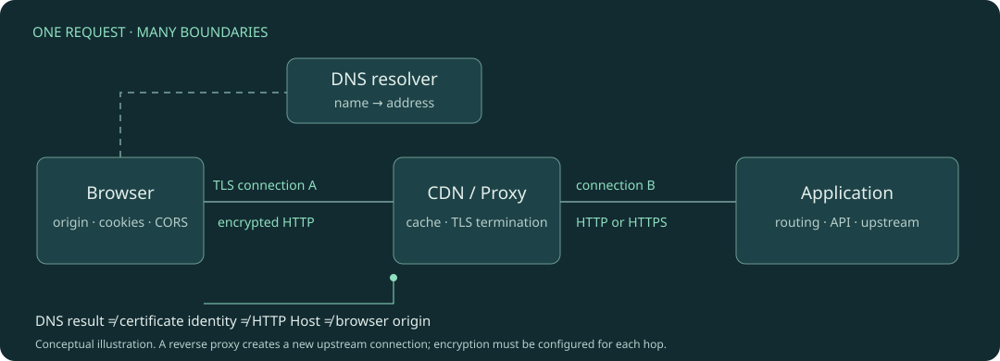

웹 네트워크
이름이 주소가 되고, 안전한 연결 위로 메시지가 오가고, 여러 서버가 응답을 만드는 과정. DNS · HTTP · TLS · 프록시 · 장애 분석을 하나의 요청으로 연결합니다.

TCP/IP 다음에 배울 것들
TCP/IP 심화는 기존 TCP/IP으로 연결합니다. 이 교재는 연결과 RTT를 짧게 복습하고, 애플리케이션과 운영에서 마주치는 나머지 네트워크를 깊게 다룹니다.
각 장은 구체적인 문제에서 출발합니다. 역할과 조건을 표로 구분하고, 주제에 맞는 트리·메시지 순서·시간축·분기·신뢰 경계를 읽습니다. 실험에서는 원본·캐시·연결 같은 상태를 직접 바꾸고 예측과 결과를 비교합니다. 생략한 조건과 교육용 값은 각 그림과 실험에서 밝힙니다.
학습 지도
1주차 1~3장: 주소 찾기 / 2주차 4~5장: HTTP와 캐시 / 3주차 6~7장: 브라우저 보안과 TLS / 4주차 8~10장: 전송 방식과 서비스 경계 / 5~6주차 11~12장: 성능 분석과 종합 실습. 장별 안내 시간은 첫 읽기 기준이며 심화 실습·복습은 별도입니다.
요청 하나로 보는 네트워크 전체 지도
주문 목록 요청이 실패했다. 어디까지 성공했는지 어떻게 구분할까?
DNS: 이름에서 주소까지
사이트 주소는 같은데 DNS 서버마다 맡은 일이 왜 다를까?
DNS 운영: 캐시와 변경의 시간차
권한 DNS를 새 IP로 바꿨는데 왜 이전 서버로 접속할까?
HTTP: 요청과 응답의 계약
주문 생성 요청이 타임아웃이면 같은 요청을 다시 보내도 될까?
HTTP 캐시와 CDN: 저장과 재사용의 조건
상품 가격을 고쳤는데 왜 새 요청도 예전 가격을 보여줄까?
브라우저 보안: 출처·쿠키·CORS
curl은 200인데 브라우저 fetch는 왜 실패할까?
HTTPS와 TLS: 암호화보다 먼저 신뢰를 확인한다
주소도 맞고 443 포트도 열렸는데, 왜 브라우저는 API 요청을 보내지 않을까?
HTTP 버전과 스트리밍: 같은 의미를 다른 통로로 보낸다
HTTP/2로 바꿨는데 왜 작은 응답까지 큰 다운로드와 함께 잠깐 멈출까?
프록시와 로드밸런서: 요청을 어디로 보내고 누가 응답하는가
서버별로 이미 맡은 연결 수가 다른데, 새 요청을 똑같이 나누는 것이 항상 공평할까?
NAT와 방화벽: 주소 변환과 허용 정책의 경계
출발지 NAT를 켰는데 왜 외부 API 연결은 계속 타임아웃될까?
성능을 시간으로 분해하기: 워터폴·대기열·재시도
첫 요청은 300ms, 다음 요청은 200ms다. 서버 코드가 100ms 빨라진 걸까?
장애 분석 종합: 증상에서 다음 관찰을 고른다
같은 요청의 앱 로그는 성공인데, 왜 사용자는 504를 받았을까?
어떤 실험을 할 수 있나?
| 바꿀 조건 | 관찰할 것 |
|---|---|
| 권한 DNS 주소를 바꾸고 시간을 전진 | 기존 TTL이 남은 리졸버가 어떤 주소를 응답하는지 |
| 응답 나이 · 원본 변경 · Cache-Control | 캐시 직접 사용, 304 재검증, 200 새 본문의 차이 |
| origin · 메서드 · 사용자 지정 헤더 · credentials | preflight 필요 여부와 실제 전송·응답 읽기의 분리 |
| 프로토콜 · 데이터 손실 · TLS 종료 위치 | 스트림 전달 지연과 구간별 암호화 경계 |
| 분배 알고리즘 · 서버 제외 · 지연 구간 | 실제 요청 분배와 전체 요청 waterfall |
학습 완료 기준
체크리스트는 현재 페이지에서만 유지됩니다. 장별 완료 표시는 브라우저에 저장됩니다. 외부 서비스 연동·분석 수집·서버 전송은 없습니다.